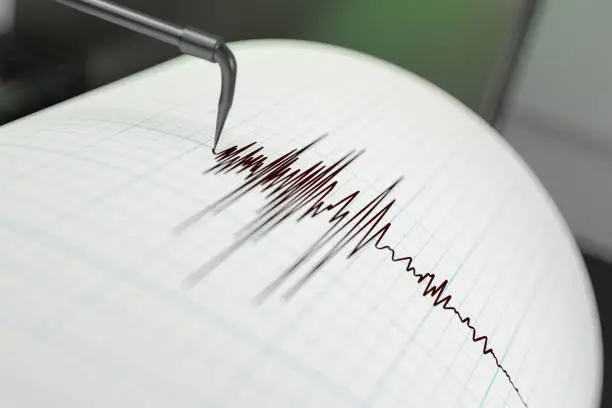
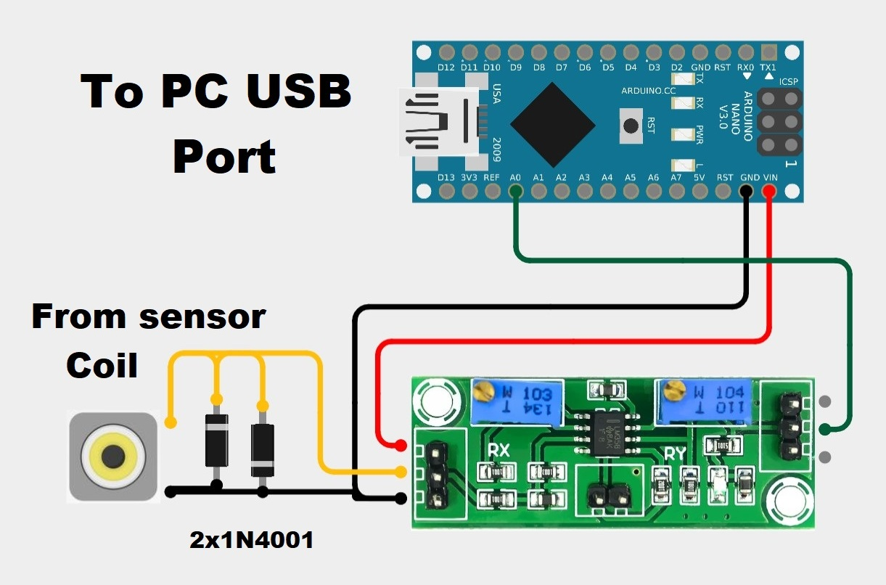

Sensore Sismografico
Benvenuti alla pagina dedicata al mio sensore sismografico, un progetto che unisce passione per l'elettronica e la sismologia. In questa guida, spiegherò come costruire e configurare un sismometro domestico utilizzando un sensore geofono e un microcontrollore Arduino. Se sei appassionato di rilevamento sismico o vuoi semplicemente esplorare un nuovo progetto, questa guida ti fornirà tutte le informazioni necessarie.
Componenti Principali del Sismometro
Il sismometro è composto da due parti principali:
Sensore Geofono:
Rileva le onde sismiche, come quelle causate da terremoti, e le converte in segnali elettrici. Questo sensore è estremamente sensibile e può rilevare movimenti minimi del suolo.Parte Elettronica:
Comprende un modulo amplificatore basato sull'IC LM358, che amplifica il segnale fino a 10.000 volte. Successivamente, un microcontrollore Arduino elabora il segnale e lo trasmette al software Amaseis sul PC per la visualizzazione e la registrazione, il firmware necessario sull'Arduino è il seguente: Scarica NerdaqII.

Configurazione del Software Amaseis
Per la gestione dei dati sismici, utilizzo il software Amaseis, un programma potente e versatile che consente di visualizzare e registrare i segnali sismici in tempo reale. Di seguito troverai una guida passo passo per configurare Amaseis e collegare il tuo sismometro al PC.
Installazione di Amaseis:
Scarica il software Amaseis dal seguente link: Scarica AmaSeis.Collegamento al Microcontrollore:
Collega l'Arduino al PC tramite USB e seleziona la porta COM corretta nelle impostazioni di Amaseis.Configurazione del Dispositivo:
- Vai su
Settings
>Device
e selezionaSETUPK1
. - Imposta il livello zero a
32768
.
Regolazione dei Filtri e del Guadagno:
Vai su Settings > Helicorder per regolare i filtri passa-basso e passa-alto e il guadagno, in base all'ampiezza del segnale.Creazione Automatica di Screenshot:
Se desideri configurare Amaseis per creare automaticamente screenshot dei sismogrammi, consulta la seguente guida dettagliata: Guida Screenshot Automatici.

Funzionamento del Sismometro
Una volta configurato, il tuo sismometro sarà in grado di rilevare terremoti e altri movimenti sismici. Può rilevare eventi sismici di grande entità a livello globale, come terremoti di magnitudo superiore a 7 gradi della scala Richter. Inoltre, il sistema di registrazione e visualizzazione di Amaseis ti consente di analizzare i dati raccolti e rivedere eventi passati.
Considerazioni Finali
Questo sismometro rappresenta un ottimo punto di partenza per chiunque voglia esplorare il rilevamento sismico senza dover investire in strumenti professionali costosi. Si tratta di un progetto adatto a chiunque, indipendentemente dal livello di esperienza in elettronica. Se segui questa guida, sarai in grado di costruire e configurare un sismometro funzionante per monitorare i movimenti sismici nella tua zona. Buona costruzione e buon divertimento!